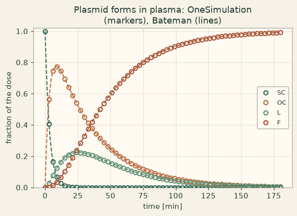

Docs › Examples › Degradation of plasmid DNA in blood plasma
Reaction kinetics · 0D
Degradation of plasmid DNA in blood plasma
Nucleases in plasma convert supercoiled plasmid DNA into the open-circular and linear forms and digest it into fragments.
Run locally with OneSimulation. The example downloads are free. Running them requires an activated runtime. Runtime Alpha 0.2.1a7 · CPython 3.13 on macOS (Apple Silicon), Ubuntu 22.04 (x86-64), and Windows x64. Installation and activation · View pilot plans. Scope of the reference checks.

What it computes
OneSimulation integrates the chain SC -> OC -> L -> F as a mass-balanced reaction network in one well-mixed plasma volume with the classical Runge-Kutta method over three hours.
What it checks
All four fractions agree with the exact Bateman solution to 3e-9 of the dose; the open-circular form peaks at 0.7743 after 8.5 min (exact 0.7743 at 8.53 min), and the supercoiled half-life is 2.31 min as ln 2 / k1.
The notebook
The complete notebook, cell by cell. Run it to produce the figures and the comparison printout.
Gene therapy with naked plasmid DNA depends on how long the plasmid survives in the blood. Only the supercoiled form (SC) is fully active; a single-strand nick relaxes it into the open-circular form (OC), a double-strand cut makes it linear (L), and further cuts digest it into fragments (F). In a plasma sample each step is a first-order reaction,
Setup. The sample starts with 100 % supercoiled plasmid. The rate constants are \(k_1=0.3\), \(k_2=0.03\) and \(k_3=0.07\) per minute, illustrative values of the magnitude found for plasmid DNA in rat plasma (B.E. Houk, G. Hochhaus, J.A. Hughes, AAPS PharmSci 1 (1999) E9): the supercoiled form is lost within minutes, the open-circular form persists for half an hour.
Reference. The chain of first-order steps has the exact Bateman solution
and the open-circular form peaks at \(t^*=\ln(k_2/k_1)/(k_2-k_1)\) (H. Bateman, Proc. Cambridge Phil. Soc. 15 (1910) 423; O. Levenspiel, Chemical Reaction Engineering, 3rd ed., §8).
import numpy as np
from onesim.cad.geometry import LumpedDomain
from onesim.meshing import LumpedMesh
from onesim.numerics import Numerics
from onesim.numerics.discretization import LumpedParameters
from onesim.numerics.time import ClassicalRungeKutta4
from onesim.physics.chemistry import (
ReactionIR,
ReactionKinetics,
ReactionNetworkIR,
SpeciesIR,
)
from onesim.simulation import Problem, Simulation
from onesim.simulation.initial_conditions import InitialValue
from onesim.visualization import plots, theme
theme.set()Model
Four forms of the same molecule (equal composition, so the network is mass-balanced) and three irreversible reactions with constant rate coefficients in 1/s. The plasma sample is one lumped volume; the fractions are of the initial dose, \(c_0=1\).
minute = 60.0
k1, k2, k3 = 0.3 / minute, 0.03 / minute, 0.07 / minute
forms = ("SC", "OC", "L", "F")
network = ReactionNetworkIR(
"plasmid_degradation",
"1",
species=tuple(SpeciesIR(name, 0, 1e-27, composition={"H": 1}) for name in forms),
reactions=(
ReactionIR("nicking", {"SC": 1}, {"OC": 1}, {"kind": "constant", "value": k1}),
ReactionIR(
"linearisation", {"OC": 1}, {"L": 1}, {"kind": "constant", "value": k2}
),
ReactionIR("digestion", {"L": 1}, {"F": 1}, {"kind": "constant", "value": k3}),
),
strict_balance=True,
)
domain = LumpedDomain()
model = ReactionKinetics(domain=domain.system, temperature=310.15, network=network)
problem = Problem(
name="Plasmid DNA in plasma",
geometry=domain,
physics=(model,),
initial_conditions=tuple(
InitialValue(model.concentration(name), 1.0 if name == "SC" else 0.0)
for name in forms
),
)
result = Simulation(
problem=problem,
mesh=LumpedMesh(domain),
numerics=Numerics(
spatial=LumpedParameters(), time_integrator=ClassicalRungeKutta4()
),
).run(start_time=0.0, end_time=180 * minute, time_step=6.0)
times = result.field(model.concentration("SC")).time_series()[0]
fractions = {
name: result.field(model.concentration(name)).time_series()[1] for name in forms
}Comparison with the Bateman solution
The exact fractions at the same times, the largest deviation of each form, the maximum of the open-circular form and the half-lives of the supercoiled and of the total circular plasmid.
rates = np.array([k1, k2, k3])
exact = {
"SC": np.exp(-k1 * times),
"OC": k1 / (k2 - k1) * (np.exp(-k1 * times) - np.exp(-k2 * times)),
"L": k1
* k2
* sum(
np.exp(-k * times) / np.prod([other - k for other in rates if other != k])
for k in rates
),
}
exact["F"] = 1.0 - exact["SC"] - exact["OC"] - exact["L"]
for name in forms:
print(
f"{name:>3s}: largest deviation from the exact solution {np.abs(fractions[name] - exact[name]).max():.2e}"
)
print(
f"mass balance: largest |sum - 1| = {np.abs(sum(fractions.values()) - 1.0).max():.2e}"
)
peak = np.argmax(fractions["OC"])
t_star = np.log(k2 / k1) / (k2 - k1)
print(
f"open-circular maximum: {fractions['OC'][peak]:.4f} at {times[peak] / minute:.1f} min; exact "
f"{k1 / (k2 - k1) * (np.exp(-k1 * t_star) - np.exp(-k2 * t_star)):.4f} at {t_star / minute:.2f} min"
)
circular = fractions["SC"] + fractions["OC"]
print(
f"half-life of the supercoiled form: {np.interp(0.5, fractions['SC'][::-1], times[::-1]) / minute:.2f} min (ln 2 / k1 = {np.log(2) / k1 / minute:.2f} min)"
)
print(
f"circular plasmid (SC + OC) falls to half after {np.interp(0.5, circular[::-1], times[::-1]) / minute:.1f} min, "
f"to 10 % after {np.interp(0.1, circular[::-1], times[::-1]) / minute:.1f} min"
)Figure
The four forms over three hours, OneSimulation as markers and the Bateman solution as lines.
shown = slice(None, None, 30)
plots.line(
points={name: (times[shown] / minute, fractions[name][shown]) for name in forms},
reference={name: (times / minute, exact[name]) for name in forms},
xlabel="time [min]",
ylabel="fraction of the dose",
ylimits=(0, 1.02),
title="Plasmid forms in plasma: OneSimulation (markers), Bateman (lines)",
legend="center right",
)
plots.show()Going further
Fit \(k_1\), \(k_2\) and \(k_3\) to measured band intensities of an agarose gel with the least-squares study of SimulationStudyService.fit. A direct branch SC → L (double-strand cut of the supercoiled form) is one more ReactionIR; an Arrhenius rate law shows how fast the plasmid disappears at room temperature instead of 37 °C.